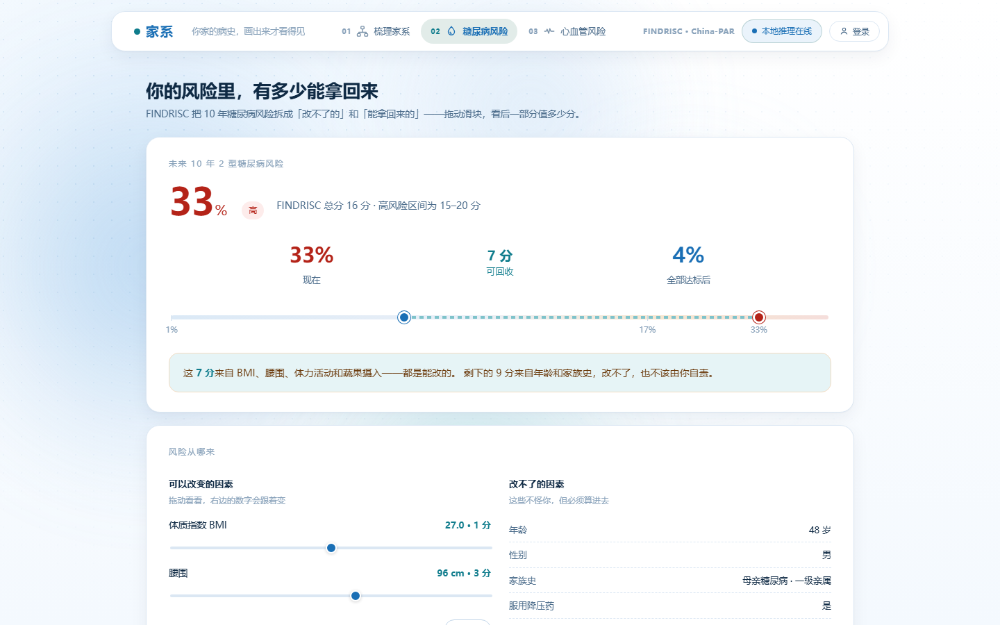
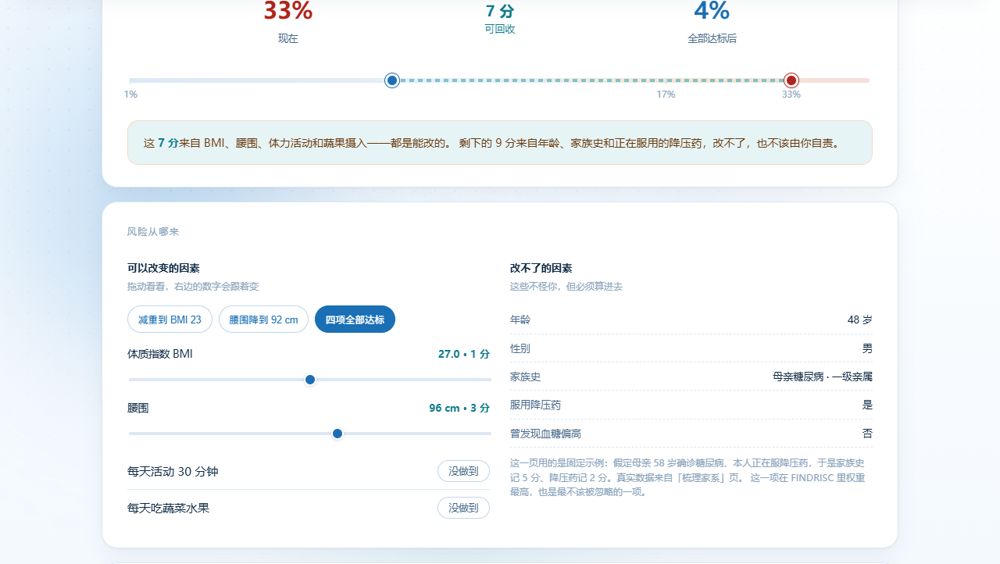

用户说一句「我妈高血压，我舅舅糖尿病，我外公脑溢血」，系统把它整理成一张结构化家系图，标出每个亲属的病与发病年龄，并算出他的风险里有多少是能拿回来的，最后给出这周就能做的一步。
它解决的是一个具体的落差：体检报告说「未见异常」，但报告只解读当次指标；问卷把家族史压成「有 / 无」；建议说「多运动」，却不告诉你「能拿回什么」。家族史在临床上用了六十年，也是三套公开风险方程里的变量，却几乎没有被结构化地记录过。
| 动作 | 操作 |
|---|---|
| 说 | 进入「梳理家系」，像聊天一样说家里人的病：「我妈高血压，我舅舅糖尿病，我外公脑溢血」。不需要按格式、不需要顺序、也不用说得清楚。 |
| 看 | 家系图实时长出节点；点任意节点能看到「依据：你第 N 轮说的原话」，说错了直接删掉重说。 |
| 算 | 切到「糖尿病风险」或「心血管风险」：家族史已自动进入方程；拖动「可改变因素」的滑块，右侧数字实时重算。 |
演示入口：https://clear.ysti.com.cn/chat?demo=1（不登录、不依赖模型，直接看完整形态）。
| 亮点 | 为什么值得说 |
|---|---|
| 不填表，用嘴说 | 口述 → 结构化，顺序无所谓、格式无所谓；这是「家里人说过的病史」最自然的录入方式 |
| 每个数字都能追溯 | 家系节点可回查原话；风险分数可检索依据；连引用错误都留档（docs/audit.md） |
| 「可回收风险」这个概念 | 33% 的风险里，7 分来自能改的因素，四项达标可降到 4%；不是又一个评分，而是行动边界 |
| 家族史真的进方程 | 不是展示用的一行字：家系图里的父母患病情况直接进入 FINDRISC / China-PAR / PLCOm2012 |
| 能在断网的电脑上跑 | 推理全在本机，数据不出机器；模型缺位时界面与计算仍完整可用 |


| 环节 | 用了什么 | 实测 |
|---|---|---|
| 口述抽取 | Qwen3-1.7B Q4_K_M + llama.cpp + GBNF 约束解码 + 三层校验 | 留出集 180 句，F1 0.877 → 1.000 |
| 性能 | GPU 推理 | 启动 1.7s · 0.11s/句 · 显存 1.8GB |
| 问答 Agent | 工具调用 + GBNF 枚举决策 + 事实卡直渲数字 | 决策输出 output_tokens: 0；数字不经模型复述 |
| 遗传模式判定 | 不用 LLM，12 维结构信号 + 确定性计算 | 40% → 96% · 6.3s → <0.1s · ECE 0.401 |
| 依据检索 | BM25 + 已核实语料 | 窄用：只回原文片段，不参与打分 |
docs/准确性说明.md 里。

本项目为原创，未基于其他完整项目二次开发。所使用的开源组件如下：
| 组件 | 用途 | 许可 |
|---|---|---|
| Next.js 16 / React 19 | 前端与路由 | MIT |
| llama.cpp | 本地推理运行时 | MIT |
| Qwen3-1.7B | 抽取与问答的基座模型 | Apache-2.0 |
| 配乐（Kevin MacLeod） | 演示视频背景音乐 | CC BY 4.0（片尾署名） |
相对早期版本，本项目做过的优化包括：把遗传模式判定从 LLM 改为确定性计算（40%→96%、6.3s→<0.1s）； 用事实卡把数字与措辞分离；把抽取从单次调用改为分句 + 三层校验（F1 0.877→1.000）。
| 项 | 地址 |
|---|---|
| 在线演示 | https://clear.ysti.com.cn |
| 免登录体验 | https://clear.ysti.com.cn/chat?demo=1 |
| 演示账号 | demo / demo123 |
| 代码仓库 | https://github.com/NimuStudio/jiaxi |
| 演示视频（B 站） | https://www.bilibili.com/video/BV1ctsk6HEDH/ |